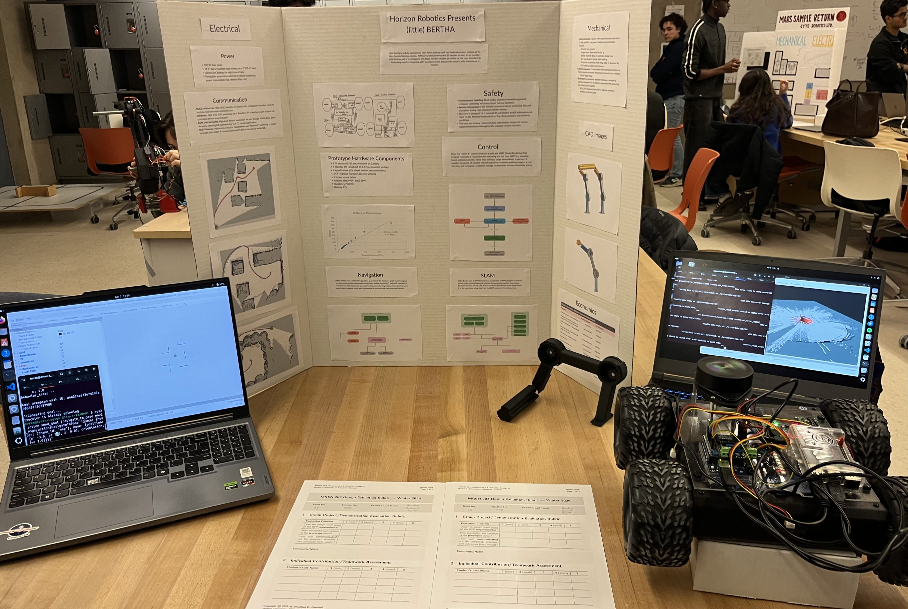
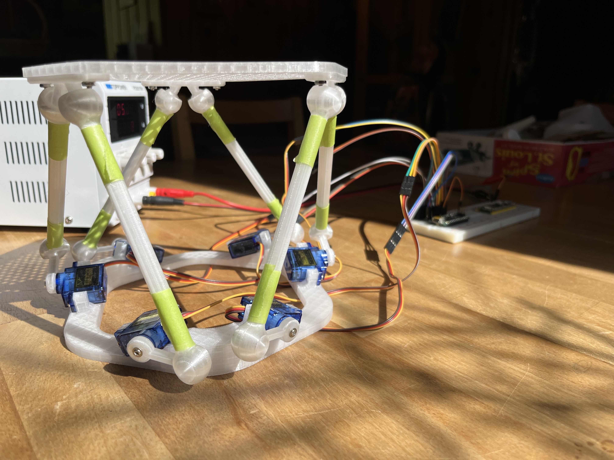
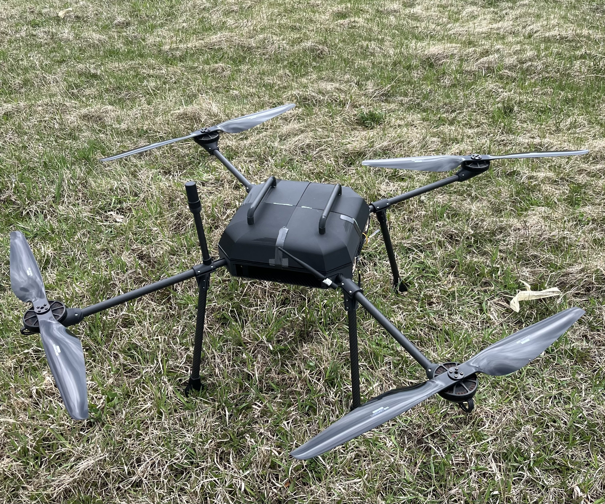

This project focuses on the design and development of an autonomous robotic system engineered for navigating unstructured terrain and high-reliability sample retrieval. It integrates a mechanically simple, roller-based intake mechanism optimized for debris tolerance and low power consumption. Autonomy is achieved through a tightly coupled GNC architecture, combining wheel odometry and LiDAR-based SLAM for state estimation, alongside a layered path planning framework and closed-loop PI control for accurate velocity tracking.

I designed, 3D-modelled, and fabricated a 6-DOF Stewart platform using FreeCAD, iterating on linkage geometry to maximize motion range and structural rigidity. Additionally, I developed the C++ code for an Arduino-based controller and a laptop user interface to coordinate the simultaneous movement of six high-torque servos.

I developed a structured protocol to tune and calibrate PID parameters in QGroundControl, specifically isolating issues such as rate-gain imbalance and sensor noise. By refining rate and attitude loops through parameter sweeps, I successfully reduced oscillations to achieve smoother, more predictable flight behavior and improved airframe safety during testing.
